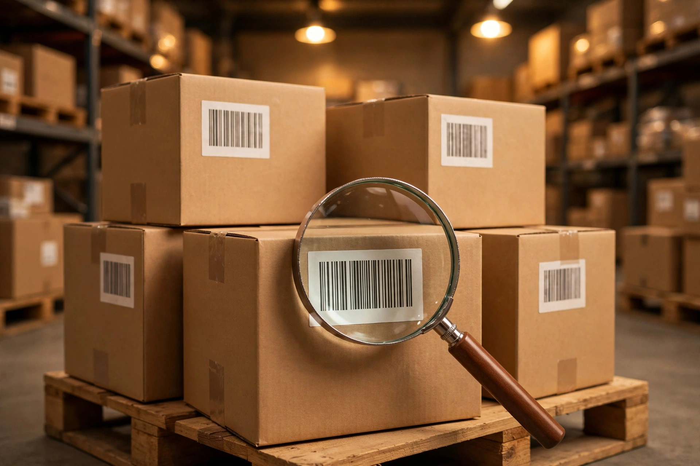
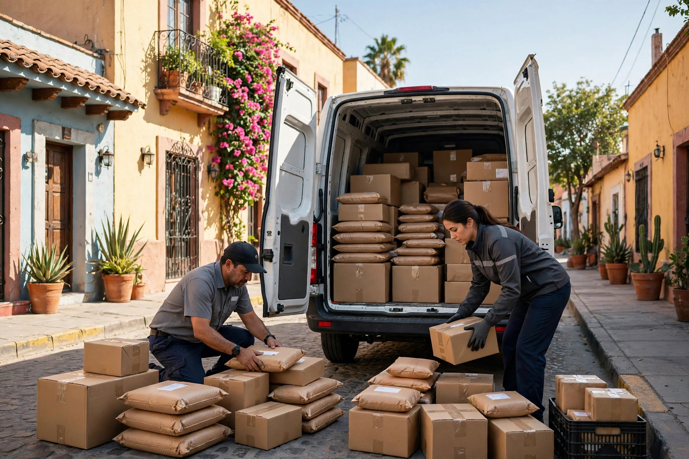

El número de guía es la llave del rastreo, pero perderlo no significa perder el paquete. Casi siempre hay otra forma de localizar tu envío: el correo de confirmación de la compra, el remitente que lo envió o la sucursal donde se generó la etiqueta. Lo importante es saber en qué orden buscar, para no perder tiempo con datos que el sistema no acepta.
Antes de llamar a nadie, revisa tres lugares. Primero, el correo electrónico con el que hiciste la compra: el número de guía suele venir en el mensaje de confirmación o en el aviso de envío. Segundo, la app o la cuenta de la tienda donde compraste: muchos pedidos muestran la paquetería y la guía en el detalle del pedido. Tercero, mensajes de texto o WhatsApp del vendedor: a veces la guía llega por ahí y queda enterrada entre otros mensajes. Si encuentras el número, ya puedes rastrear tu envío de Paquetexpress con la guía y ver en qué punto del camino va.

Cuando tú eres quien recibe, el remitente —la tienda o la persona que envió el paquete— tiene la guía en su comprobante de envío. Escríbele con los datos que sí tienes: fecha aproximada del envío, ciudad de origen y destino, y tu nombre completo tal como aparece en la etiqueta. Con eso, el remitente puede reenviarte el número en minutos. Si el envío lo hiciste tú y perdiste tu comprobante, la sucursal donde lo dejaste puede reimprimirlo con tu identificación y la fecha del envío.
El rastreador público de Paquetexpress pide la guía, así que con solo tu nombre no verás el estatus en línea. Pero eso no te deja sin opciones: en una sucursal, el personal puede buscar el envío con tus datos y la fecha aproximada, sobre todo si el paquete está retenido ahí o salió recientemente. Si vives cerca de una sucursal, vale la pena pasar con tu identificación; aquí puedes consultar las sucursales de Paquetexpress y sus horarios antes de ir.

Si pasaron más de cinco días hábiles desde la fecha de envío, nadie te puede dar la guía y la sucursal no localiza el paquete con tus datos, levanta un reporte con el remitente: él es quien contrató el servicio y puede abrir la aclaración formal. Ten a mano tu identificación, la fecha aproximada, el contenido declarado y la dirección de entrega. En paqueteriarastreo.com encontrarás más guías de rastreo y facturación para las paqueterías más usadas en México.